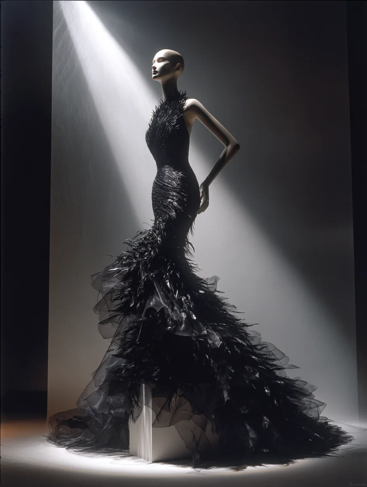
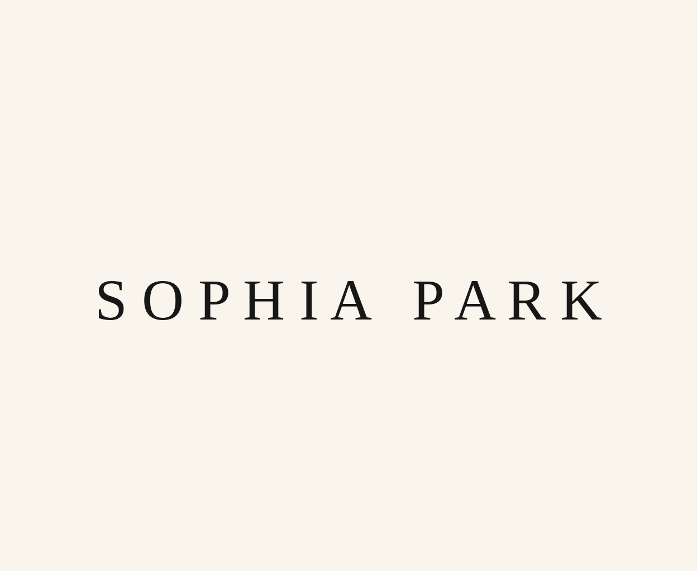
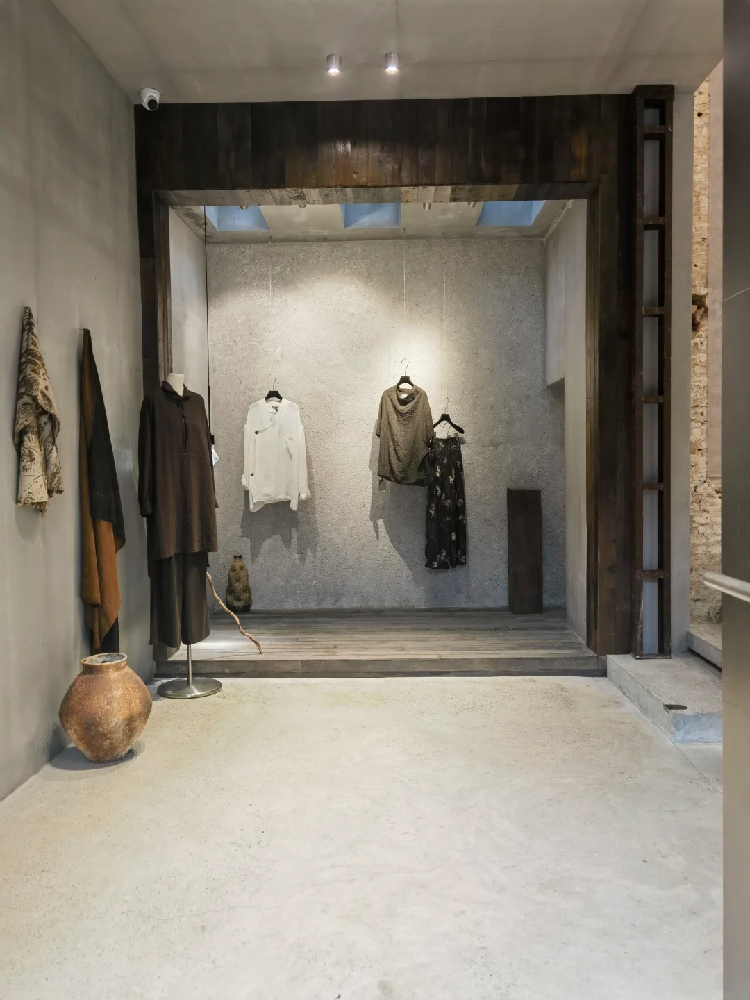

Private Couture
Exclusive patterns, curated fabrics, multiple fittings and meticulous hand finishing.

A private couture space connecting the discipline of Seoul craftsmanship with the creative freedom of Los Angeles.

SOPHIA PARK places private couture at its core, bringing precise craft, modern proportion and the wearer’s individuality into one considered language.
Founded in 2018 by Sophia Park and Seraphina, the studio begins every commission with an intimate conversation—understanding the occasion, pace of life, physical experience and aesthetic instincts before selecting texture and colour from the material archive.
From sketch, drape and pattern to fitting and hand finishing, every stage is guided across creative, design, strategy and client experience. The result is not governed by passing trends, but by clear silhouettes, nuanced materials and enduring wear.
Our practice spans private commissions, occasion gowns, image styling and creative consultancy, always offering a quiet, focused and highly discreet collaboration.

Restrained concrete, dark timber and soft illumination form the studio’s foundation. Garments are viewed, touched and fitted in stillness, allowing material and proportion to become the true protagonists.
Exclusive patterns, curated fabrics, multiple fittings and meticulous hand finishing.
Distinctive gowns for galas, ceremonies and the moments that define a life.
Long-term support for collection concepts, brand codes and visual narratives.